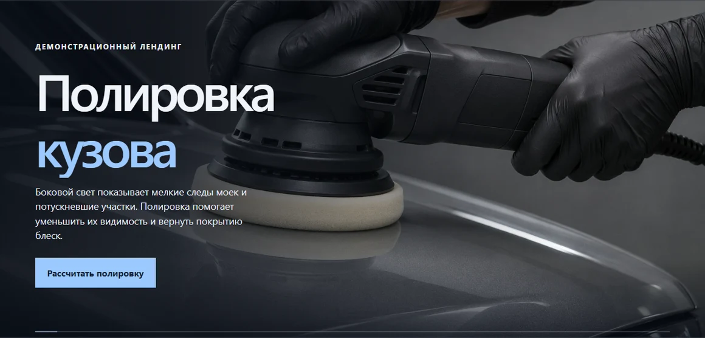
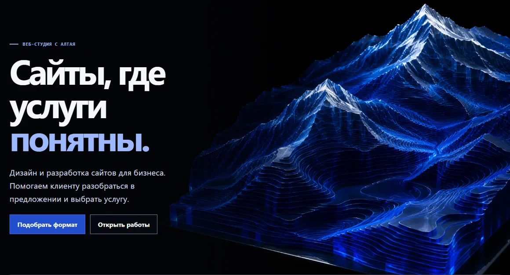
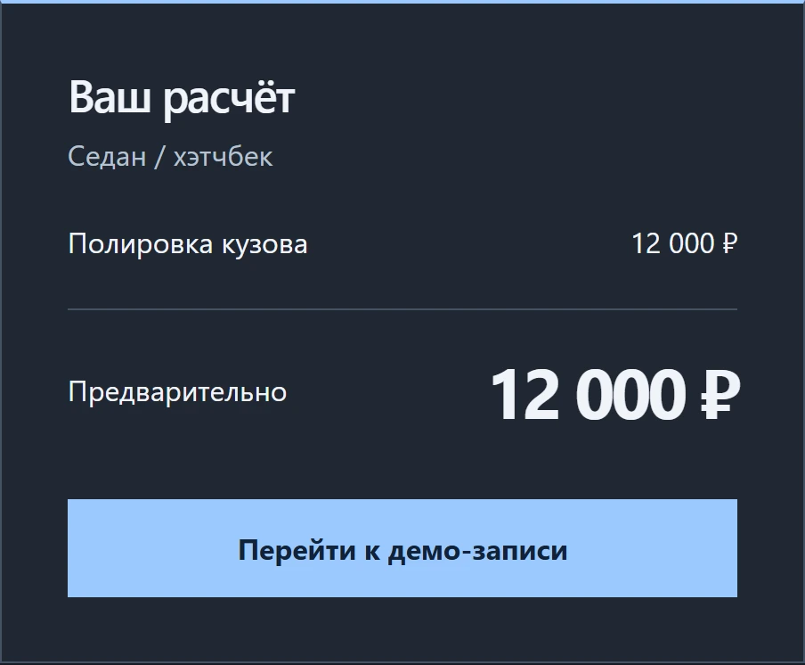

Лендинг
Для одной услуги, запуска или рекламной кампании.
15 000 ₽7 дней · одна услуга и одна страница
Что входитОффер, программа или цена, ответы на вопросы и путь к обращению. Два раунда правок.

01 Услуги / экспертиза
Design / development
Interaction / AI
Расскажите, кто приходит на ваш сайт и с какой задачей. Подберём формат и согласуем состав работ.
Для одной услуги, запуска или рекламной кампании.
15 000 ₽7 дней · одна услуга и одна страница
Что входитОффер, программа или цена, ответы на вопросы и путь к обращению. Два раунда правок.

Для бизнеса с несколькими услугами и разными аудиториями.
Что входитСтраницы услуг, кейсы, FAQ и контакты.

Для услуги, которую проще показать в действии.
Что входитКалькулятор, сравнение или конфигуратор с понятными правилами и итогом.

Для повторяющихся вопросов, выбора услуги или сбора заявки.
Что входитСценарий диалога, проверка ввода и способ передать запрос команде.
Обсудить этот форматСписок услуг, несколько примеров работ, типичные вопросы клиентов и контакт, по которому вы принимаете обращения.
Обсудить задачуНовый проект